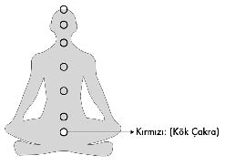
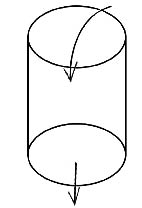

1- KIRMIZI (KÖK ÇAKRA) TOPRAKLANMA:
Kırmızı “Ki” topları kök çakrasını dengeler ve topraklanma işlemini gerçekleştirir. Topraklanmak konusu oldukça önemlidir ve iyi öğrenilmesi, dolayısıyla bu bölgenin doğru dengelenmesi gerekir.
Spiritüel pek çok insan genelde bedendeki üst çakralara daha fazla yoğunlaşarak bunlar üzerinde çalışmalar gerçekleştirirler. Özellikle “üçüncü göz” enerji merkezinin büyüsü tek başına bile herkesi tesiri altına almayı başarmaktadır. Oysa aşağıdaki problemleri halletmeden, yukarıda herhangi bir inşaata kalkışmak mümkün değildir. İşe tepe ve alın çakralarından başlayarak gerçekleştirilen çalışmaların, binanın temelini atıp birinci katını çıkmadan yedinci katın inşaatına başlamak aptallığından hiç farkı yoktur.
Eğer insan vücudunu bir ney ya da boru gibi düşünecek olursan, tepe çakra bölgesinden dökülen suyun alt kısımdaki kök çakra bölgesinde bir tıkanıklıkla karşılaşması halinde, hedeflenen devir daim, akışkanlık ve dönüşüm gerçekleşmemiş olacaktır. Oysa olması gereken enerjinin tepeden alınıp, bütün enerji merkezlerini dolaştıktan sonra yerini yeni bir enerjiye bırakmak üzere akıp gitmesidir.

Coşkun bir nehir gibi akıp yeni suyla tazelenmesi gereken insan, bedenindeki enerji merkezlerinde var olan blokajlardan dolayı sağlıklı enerji alışverişi yapamadığından yazık ki akışkanlığı yitirerek bir bardak suya dönüşür. Bu durağanlığıyla bedeninde blokajları biriktirmeye ve bir süre sonra da hastalık ve sorun üretmeye başlar.
Tepe çakranın açık ve görevini yapıyor olması her ne kadar önemliyse, aşağıdaki çakraların tıkalı olmaması da bir o kadar gereklidir. Bu yüzden, yüksek enerjili olmak yerine akışkan olabilmek çok daha elzemdir.
Enerji, bedenden sürekli gelip geçer ve kendini yeniler. Dolayısıyla yenilenen hiçbir şey de kirli kalmaz.
Kök çakranın iyi çalışması, yani akışkanlığın sorunsuz olması, enerji geçişlerinin sürekliliğini, tazeliğini, temizlenmeyi ve yenilenmeyi sağlar.
Bir şeye kızıp öfkelenen kişiler, kısa sürede konuyu kapatıp, tartışmadan önceki keyifli ve eğlenceli haline hemen geri dönebiliyorlarsa ve biraz önceki stresin artçı sarsıntılarını bedenlerinde devam ettirmiyorlarsa, bu o kişilerin akışkanlığının bir işareti sayılabilir.
Fakat üç yaşında boğulma tehlikesi geçirip de 50’li yaşlarında hâlâ sudan korkan insanlar içinse aynı akışkanlıktan bahsetmek mümkün değildir. Bu vakada, 47 yıl boyunca bedende yerleşke kuran bir travma söz konusudur. Dolayısıyla bedende tazelenmeyi, yenilenmeyi ve iyileşmeyi önleyen bir blokaj var demektir.
Henüz bir saniye önce aldığın nefes dahi içinde kalmayıp yerini bir yeni soluğa bırakıp vücudundan çıkarken, yaşanan bir travmayı ömür boyu bu bedende tutmanın hiçbir mantıklı izahı yoktur!
Günlük hayatında sen de kaçınılmaz olarak birtakım negatif verilere maruz kalıyorsun. Tatsız haberler alabiliyor, kötü sözler işitebiliyor, tartışma yaşıyor, kavgalar görüyor ya da sevimsiz birtakım olaylara tanık oluyorsun...
Gün boyu aldığın her veriyi bedeninde biriktirip durduğun ve bunları kendinde hapsettiğin dolayısıyla akıp gitmesine izin vermediğin bütün blokajların acıklı sonuçlarını yaşamaktan elbette muaf kalamazsın. Bu noktada sürekli akan bir nehir olmayı başardığında hiçbir olumsuzluk bedeninde yer edinip kalmayacak, akıp giderek yerini yeni bir enerjiye bırakacaktır.
Budha, “Bir nehirde, aynı suda iki kez yıkanılmaz” derken aslında tam da bunu kastediyordu.
Enerji bir devir daim işidir.
Akan suya bir kova dolusu mürekkep de döksen, sadece bir dakika sonra su eski berraklığına ve sağlığına kavuşacaktır. Oysa bir bardak suyu bulandırıp onu içilmez ve sağlıksız hale getirebilmek için o mürekkebin sadece birkaç damlası bile yeterlidir.
Sen nehir olduğun müddetçe içeride bir blokaj bulunsa bile su kendini yeniledikçe blokajın içeride yer etmesi mümkün olmayacağından, hayatında problem ve hastalık yaratma fırsatı da bulamayacaktır. Bir bardak su formunda yaşayan her insanın yazık ki en küçük bir negatifte enerjisi düşer, atamadığı blokajların sıkıntılarını da eninde sonunda deneyimlemeye başlar.
Kök çakra, bu yüzden düşündüğünden çok daha önemlidir ve hatta bana göre işin başladığı yerdir. Buradaki problemi çözmediğin sürece kötü bir zemin üzerinde her an yıkılmaya hazır çürük bir inşaat başlatmış olursun.
Nietzsche’nin de dediği gibi “Dallarının bulutları delip geçmesini istiyorsan, köklerini toprağın derinliklerine yollamalısın.”
Pek çok Spiritüel insan gibi uçup kaçmakta anlam bulmaya çalışmak yerine bana göre kök çakrayı iyi anlamalı ve dengelemelisin. Bu ilk adımı başaramadığında, atacağın ikinci adım seni ileriye taşımayacaktır.
Kök çakra; insanın dünyevi olan her şeyle
kurduğu ilişkiyi belirler!
Kök çakra topraklanmayı sağlayan bir enerji merkezidir. İnsanlar toprağa basarak ve topraktan çıkan besinle beslenerek aslında son derece sağlıklı bir dünyada yaşamak üzere dizayn edilmiş canlılardır. Tarih içinde gelişen medeniyetler ve teknolojiyle birlikte, topraktan giderek uzaklaşan insanın, sağlıklı yaşam şartları sekteye uğramıştır.
Günümüzde, modern insanın kök çakrayla ilgili çok sıkıntı yaşamasının nedeni de topraktan fazla uzaklaşmış olmasıdır.
Normal şartlarda her insan, topraklanabilmek için toprakla tam ve sağlıklı temas halinde yaşamak zorundadır. Toprakta yetişen malzemeleri yemek, toprak üzerinde yetişen hayvanları tüketmek, toprak üzerinde gezinen suyu içmek ve yine toprağa basarak yaşaması gereken sağlıklı insan, modernleşen dünyada bırakın bu saydığım teması sağlayabilmeyi, tatiller dışında neredeyse toprak bile görmeden yaşamına devam ediyor.
İnsanoğlu toprakla kurduğu bütün bağları, medeniyetler tarihi boyunca teknolojik gelişime ve değişime de bağlı olarak zaman içinde yaşam standardından dışlayarak koparttı. Modern çağın insanı, artık toprağa basamadan, beton zeminler üzerinde ayakkabılarıyla yürüyor, toprak yüzü görmemiş fabrika hayvanlarıyla besleniyor, genetiğiyle oynanmış sebze ve meyve yiyip, plastik damacanalara doldurulan suyu içerek yaşıyor.
Belki şimdi daha da üzüleceksin ama içinde bir avuç da olsa yeşillik var diye taşındığın yeni modern konutlardaki bahçende karşına çıkan çimli toprak parçaları da aslında dünyaya bağlanan gerçek toprak değil. Beton havuzlar içine yerleştirilen peyzajlar sana ormanın verdiği şifayı vermez.
Yeni yerleşim yapılarının yerden metrelerce uzaklaşarak bulutları bile delen yüksek katlı mimari modalar da insanların toprakla mesafesinin giderek açıldığının başka bir işaretidir. Bugün 20’nci, 30’uncu katlardaki lüks ve şahane dairelerin, eski tek katlı evlerin verdiği ışığı, şifayı ve yüksek enerjiyi taşımamasının nedeni tabii ki toprağın çok yukarısında inşa edilmelerindendir.
Aynı mesafe günümüze yediğimiz besinlerle de aramıza girmiş durumdadır. Sayısız kimyevi işlemin ardından karton kutulara ambalajlanan sebze –meyveler de, fabrikalarda döllenip kesilen tavuklar ve aynı sistemle yetiştirilen sığırlar da toprakla olan mesafelerinin açılmasından dolayı, artık insan sağlığını topraklamak yerine tehdit eder hale bile geldi.
Satın aldığın hiçbir ambalajlı ürünle, üzerinde her ne kadar “Bol C Vitamini” yazsa da aslında umduğun vitamin takviyesini alamıyorsun çünkü doğal toprak ürünlerine ulaşman günümüz teknolojik koşulları içinde hayli zor.
Ambalaj içinde sunulan gıda ürünleri, toprağın değil, fabrikaların sana kimyasal ikramlarıdır...
Bütün bu gıda hezeyanından dolayı artık kök çakra, topraklanma görevini tam ve güçlü şekilde yapamaz hale geliyor
Toprakla olan ilişkisini çok zaman önce yitiren modern çağ insanının, bugün topraklanmaya her zamankinden
çok daha fazla ihtiyacı var.
Bulunduğu her ortamda manyetik alan kirliliğine de maruz kalan modern çağ insanı, kablosuz internet, televizyon ve telefon bağlantılarının yanı sıra birçok mekânda etkileşimi altında kaldığı elektrik akımlarının da olumsuz sonuçlarını yaşıyor. Örneğin elektriği yoğun hissettiğin defile salonları, fuar alanları ve alışveriş merkezlerinde ayakta geçirdiğin sekiz saatin sonunda yaşayacağın yorgunluk ve ağrıyı ormanda ayakta geçireceğin sekiz saatin sonunda hissetmezsin. Görünen ve görünmeyen bütün bu blokajlardan da dolayı, topraklanmak artık bizim için neredeyse hayati önem taşıyor.
Her ne kadar bunun farkında olup da elinden geldiğince doğal beslenmeye ve teknolojisiz yaşamaya çaba göstersen de, gıdayla topraklanmak kadar bedenin enerjisini de nötrlemesi (sıfırlaması) çok önemlidir.
Bu bilgiden hareketle, kötü beslenip kalitesiz yaşayarak biriktirdiğin bütün negatifi kök çakrana kırmızı bir “Ki” topu atarak topraklayamazsın.
Fiziksel topraklanmayla, enerjisel topraklanmayı birbirlerinin kâr oranlarıyla beslenen iki ayrı şirketi dengeleyerek ayakta tutmaya benzetebilirsin. Mesela zarar eden bedensel topraklanma şirketiyle, kâr eden enerjisel topraklanma ofisi arasında kâr-zarar paylaşımı yaparak bir sürdürülebilirlik yakalayabilirsin.
Bedensel topraklanma imkânı günümüz şartlarında oldukça zor göründüğüne göre, mümkün olduğu oranda iyi ve kaliteli bir enerjisel topraklanma yapmak bu durumda ayrıca önem kazanıyor.
Topraklanmanın önemi ve gerekliliği konusunu dünyada ilk gündeme getiren kişi ben değilim, dolaysısıyla bu bilgiye sahip olan tek kurum da sayılmam!
Din kitaplarını açıp okuyacak olursan, topraklanmanın hayati değerinin defalarca kez insanoğluna hatırlatıldığını ve metotlarla da açıkça öğretildiğini görürsün.
İslamiyet’teki “abdest” uygulaması,
bir topraklama metodudur.
Abdestin amacı elleri ayakları temizlemek değil, bedendeki enerjiyi sıfırlayıp nötralize etmektir. Bu yüzden de su bulunmadığı takdirde “teyemmüm” adı verilen uygulamayla toprak kullanarak abdest alınır.
Abdest aldığın el, ayak, kulak, burun, yüz bölgelerinin negatif temasa en açık alanlar olması da tesadüf değildir. Bu topraklama işlemiyle bedenin işittiği, gördüğü, dokunduğu, bastığı ya da muhatap olduğu olumsuzlukların suyla ya da toprakla nötralize edilmesi hedeflenir. Bazı abdestlerin sadece cinsel arınmayla ilgi olmasının altında yatan neden de yine enerjiyi sıfırlamaktır.
Dinler tarihi boyunca birbirlerine karşı toleranssız ve tahammülsüz tavırlar içinde olan büyük dinlerin içine bakarsak, abdest sözcüğünün Türkçeye Selçuklular zamanında Farsçadan geçtiğini görürüz. Anlamı da “su tutmak”tır. Ab (su) ve dest (tutmak, kavramak) kelimelerinin birleşiminden oluşmuştur. İran ve bazı diğer Müslüman ülkeler ile İngilizce konuşan ülkelerde abdest yerine “vudu” kelimesi kullanılır. Abdest kelimesinin Yunanca “bir nesneyi sıvıya batırmak” anlamında baptis sözcüğü ve “boyamak” anlamında baptein sözcüğü ile benzerliği dikkate değerdir.
Bakış açını genişletmeyi denersen, bütün dinlerin aslında hep aynı şeylere dikkat çektiğini ve ortak bilgileri öğrettiğini görürsün.
Bebeğin, doğumu anne için ve dolayısıyla karnındaki bebek için de ağır bir travma olduğundan, Hıristiyanlıkta bebekler doğar doğmaz yaşadıkları bu travmadan arınmak üzere vaftiz edilirler. Bu ritüelle; korku, heyecan ve endişeyle saatlerce acı çekerek bağıran annenin kendisine ve karnındaki çocuğa yaşattığı travmanın topraklanması amaçlanır. Böylece çocuğun da arınıp kutsanarak, bir birey olarak yaşam yolunda yürürken geleceğine daha temiz ve berrak bakabilmesi beklenir. Yetişkinlerde ise günahlardan arınmak için suyla vaftiz törenleri vardır.
Dünyada son beş yıldır denenen ve doğumu oldukça kolaylaştırdığı görülen “orgazmik doğum” sırasında annenin ve babanın birbirlerinin ellerini tutması, saçlarını okşaması ya da birbirlerinin varlıklarını hissetmesi, yaşanan doğumun seyrini de hayli değiştiriyor.
“Orgazmik doğum” sırasında çiftlerin deneyimlediği şey aslında cinsellik değildir. Çiftler bu esnada sadece el ele tutuşarak bile aşkı, sevgiyi, hazzı ve keyfi duyumsayarak doğumu hem anne için, hem de bebek için daha da kolaylaştırırlar.
Son yıllarda Türkiye’de de eşiyle birlikte doğumhaneye girmek isteyen yeni nesil erkeklerin amacı belgesel çekmek değil, anneyi sevgiyle destekleyerek doğumuna yardımcı olmaktır.
Topraklanmanın başka bir ritüeli de Musevilikte karşımıza çıkar. Anaerkil bir kültür olan Musevilikte “mikve” adını alan topraklama uygulamasında, gelin adayı çırılçıplak halde abdest havuzuna bütün vücudu ve başıyla birlikte sokulup arındırılır ve havuzdan çıktıktan sonra da genç kadının başında ekmek kırılır. Evin ve sosyal hayatın gidişatını organize eden kadın enerjisinin önemine dikkat çeken bu ritüelle, gelin adayının baba evinde yaşadığı travmalardan arınması ve yeni kuracağı ailesine genç kızlık döneminde yaşadığı hiçbir olumsuzluğu taşımaması hedeflenir. İnanca göre kadın evin reisidir ve yeni kuracağı yuvasını da sevgisiyle, enerjisiyle yönetip eğitecek olan esas güçtür. Musevi kültürü, kadının enerjisinin eve hâkim ve aile hayatının yönetici gücü olduğunun bilincindedir. Musevi dininde anne Musevi’yse doğan çocuk da Musevi sayılırken babanın hangi dinden olduğu önemini tamamen yitirtir. Üstelik Musevi bir babaya rağmen anne başka bir dindense çocuğun Musevi sayılması imkânsızdır.
Baskıcı kültürlerde, “kadın” biraz da olsa özgürlüğünü kullanmaya başladığında evin içinde, sosyal ilişkilerde, çocukların eğitiminde ve ilişkilerin dengelenmesinde kadının enerji üstünlüğü ortaya çıkar ve aileler daha sağlıklı yapılanırlar.
Kök çakranın elementinin kırmızı ateş olduğunu düşünürsen, Nevruz’da insanların ateşin üstünden atlaması geleneğinin altında da yine kök çakrayı topraklamak ve temizlemek amacı olduğunu kolayca anlayabilirsin.
Dinler ve kültürler dışında “topraklanma” konusunun önemini ekonomik faydaya çevirmeyi başaran bir sektör de var:
Fastfood zincirleri!
Hayır... Topraklanma düşündüğün gibi sadece dini bir ritüel değildir...
İnsan hakikatidir!
Sen uyurken, fastfood zincirleri insanların bu hakikati üzerinde milyonlarca deneyler yapıp durdular. Bu yüzden Pizza Hut, McDonald’s, Burger King, KFC, Coca-Cola gibi büyük gıda zincirlerinin kırmızı logolu olmaları küçük bir tesadüf sayılmaz. Bu aslında son derece profesyonel bir bilinçaltı manipülasyondur! Bu firmaların kullandıkları canlı kırmızılarla bilinçaltına ulaştırdıkları mesaj senin yemek yediğin vakit topraklanacağın bilgisidir.
İşyerinden gergin çıkıp da evine gitmeden önce yolunu kesen kırmızının yaptığı “9,90 liraya topraklanarak mutlu olabilirsin” davetinin cazibesine eminim senin de kayıtsız kalamadığın olmuştur.
Bugün neredeyse bütün besin maddelerinde bu açık davet vardır, bilinçlice ve profesyonelce uygulanır. Sen sıkıldıkça ya da kendini mutsuz hissettikçe, onlar da sana en kampanyalısından uygun fiyatlarla hızlı ve kolay yoldan mutlu olabilme imkânı satmaya devam edeceklerdir.
Mesela “Cıssss...” sesleri çıkaran kutuların içindeki buz gibi ve bol gazlı yakıcı bir içecekle kendini iyi hisseder, kan şekerini yükseltir ve böylece topraklanmış olursun. Sana onlarca cazip menü seçenekleriyle sundukları bu yiyecekler ve içecekler gün boyu biriktirip de bedeninden atamadığın negatif enerjini nötralize etmeni kolay yoldan sağlayacaklardır.
Fastfood’lar, kırmızı et ürünleri, gazlı içecekler, çikolatalar ve tatlılar her ne kadar hızlı topraklayıcılar sayılsalar da maalesef insan bedenine, ağır bedeller ödeten gıdalardır.
Sigara da topraklayıcı olmasına rağmen, zararlarını göz önünde bulundurursan eğer, bence hiç topraklanmaman sigara içmekten çok daha iyi sayılabilir.
Doğa insanları, köylüler, çiftçiler ya da işi toprakla ilgili olanlar, bu tür yapay ve sağlıksız gıda topraklanmalarına ihtiyaç duymazlar çünkü zaten ayaklarını toprağa bastıkları an topraklanmaya da başlarlar. Dolayısıyla bu insanların köylerine ya da semtlerine bir fastfood restoran açılsa dahi içgüdüsel olarak ekstra bir topraklanma ihtiyacı hissetmeyeceklerinden fastfood restoranlara rağbet göstermezler. Bu yüzden köylerde, kasabalarda ya da çitliklerde fastfood restoranları görmen zordur.
Et çok ağır bir topraklayıcı sayılır ve görevini gayet iyi yapar. Aslında genel olarak hayvansal gıdalar hızlı topraklama sağlarlar fakat birçok enerjinin yükselmesi imkânını da ortadan kaldırırlar. Günde üç öğün et yiyen insanların meditatif açıdan etkili çalışmalar yapması daha zordur. Tıpkı yapay gıdalar tüketenler gibi. Yüksek meditasyonların yapıldığı kamplarda fazla hayvansal gıda tüketilmesine izin verilmemesinin sebebi de budur.
Batı kültürlerinde ete ve hayvansal ürünlere ulaşmak, hızlı, kolay ve bol alternatifli olduğundan insanların günlük beslenme alışkanlıkları içinde yoğun et tüketmeye başladıkları görülmekte ve bu insanların giderek saldırganlaştıkları da tespit edilmektedir. Etle alınan korku hormonu, insanı daha saldırgan yapmaktadır.
Fazla et ve yapay gıda tüketmek içerdiği steroidlerden (Halkalı yapıdaki organik bileşkelerdir. Doğal olarak oluşan en önemli steroid bileşkeleri arasında safra asitlerini, erkek ve dişi seks hormonlarını, adrenal bezsi korteks hormonlarını sayabiliriz.) dolayı sıkıntı yaratır. Bu gıdalarda ağır bir hücresel hafıza vardır. Ayağı toprağa basmadan, gün ışığı dahi görmeden tesislerde yetiştirilen yazık ki kimyasallarla hızlıca büyütülüp kesim aşamasına getirilen inek ve tavuklardan sofralarımıza transfer olan “vahşet dolu” hücreler insan sağlığı üzerinde büyük olumsuz etkiler yaratır.
Bir zamanlar hayvansal gıdaların daha çok tüketilmesi önerilirken, bugün artık haftada en fazla 2 ya da 3 öğünün yeterli olduğu görüşü geçerlilik kazanmaktadır.
Katı diyet kuralları oluşturup güçlükle bunlara riayet etmeni beklemiyorum senden ancak genel olarak kaliteli bir beslenme düzeni yaratmanı isterim. Hayatındaki et ve hayvansal ürünlerin miktarını azalttığında, bol yeşillerle ve toprak ürünleriyle beslenmeyi tercih ettiğinde zaten elinden geleni yapmış sayılacaksın.
Ben de kırmızı eti çok seven biri olarak, uzun yıllar bu alışkanlıkla beslenmeme rağmen son yedi yıldır hiç kırmızı et yemiyorum, süt ya da ayran da içmediğim gibi seyrek aralıklarla çok az miktarda peynir almayı tercih edebiliyorum.
Vejetaryen beslenmemden dolayı çok arkadaşım protein ihtiyacımı neyle karşıladığımı merak etse de, proteinin tek kaynağı kırmızı et olmadığından aslında onların düşündükleri orandan fazla protein alabiliyorum. Yediğin ekmeğin, havucun, brokolinin, meyve suyunun içinde bile protein mevcuttur. O yüzden benim protein ihtiyacımın derdine düşen herkese “Ben proteini her yerden alıyorum, yalnız sen C vitaminini en son ne zaman almıştın?” diye soruyorum ve her defasında, benim aldığım protein kadar C vitamini alamadıklarını görüyorum.
Egzersizlerini yapmaya devam ettikçe, hayvansal gıda alımında giderek azalma olduğunu, bilinçli tercihin olmasa bile daha az et ve hayvansal ürün tüketmeyi tercih ettiğini fark edebilirsin. Bu gayet normal bir süreçtir ve emin ol ki her şey yolunda demektir. Nefes çalışmalarını uyguladıkça, hayvansal gıdalarla ilişkine mesafe girmeye başlayacaktır.
Vegan (et ve et ürünlerinin yanı sıra hiçbir hayvansal gıda tüketmeyen) beslenme düzeniyle yaşayan Nobel ödüllü Doktor Umberto Veronesi’nin yaptığı tıbbi araştırmalar, kanserin yüzde yüz hayvansal gıdalardan kaynaklandığını ortaya koymaktadır.
Hayvansal gıdaların yoğun tüketiminin, insan sağlığı üzerinde yarattığı ağır tehdit bugün hiçbir tıbbi kurum tarafından yadsınamayacak bir doğruluk ve geçerlilik kazanmıştır.
Ben her iki beslenme düzenini de denemiş, bundan yıllar önce bol et tüketen bir adamken vejetaryen olmaya karar vermiş biri olarak senin de her iki beslenme düzenini tecrübe ettikten sonra kendi beslenme alışkanlıkların üzerinde bir karar vermeni isterim. On beş gün kadar et ve hayvansal ürün yemeyerek vejetaryenliği test edersen, etsiz yaşamanın sana kendini daha iyi hissettirdiğini görürsün. Her zaman olduğu gibi seçim yine senin!
Belki eski zamanlarda yaşıyor olsaydık bir parça da olsa sağlıklı et yiyerek beslenme şansımız olabilirdi. Yazık ki günümüzde fabrikalarda yetiştirilen ve yoğun korku hormonu ihtiva eden hayvanlar, bizleri beslenme şeklimizi yeninden yapılandırmak zorunda bırakıyor.
Yapılan son araştırmalar yazık ki içtiğimiz sütlerin de gayet zararlı olduğunu kanıtladı. İnek sütünün kemik yoğunluğunu artırdığı söylense de, aslında bunun tamamen yalan olduğu, bedeni asidik yaptığından dolayı kemik yıkım hızını artırdığı gerçeği de ortaya çıktı.
Kırmızı giyenler topraklanabilir mi?
Kırmızı görenin, kırmızı giyenden daha fazla topraklanabileceğini söylemek mümkünse de, renkleri görmek ve giymek güçlü bir topraklama yöntemi değildir.
Topraklanmak için kırmızı iç çamaşırı giyenler üzerlerine ışık vurduğunda taşıdıkları rengi kendilerine değil, karşılarındakine yansıtırlar. Dolayısıyla kök çakrana yollamayı hedeflediğin kırmızı yerini bulamamış olur.
Renkleri görmek ve onları üzerinde taşımak konusuna fazla odaklanmamanı, bunu tartışana kadar egzersizlerini uygulamanı ve “Ki” toplarının renklerinden faydalanmanı öneririm.